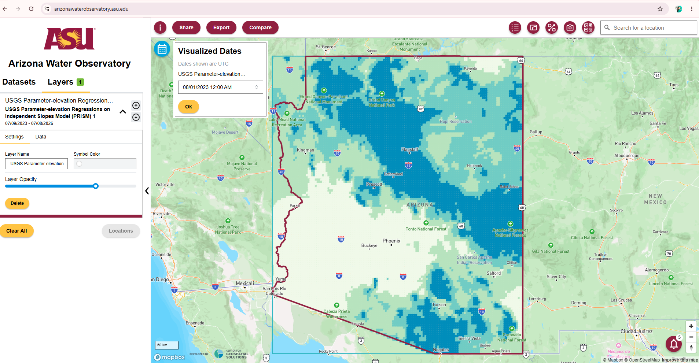
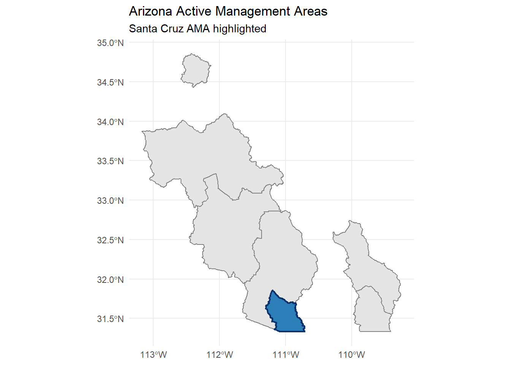
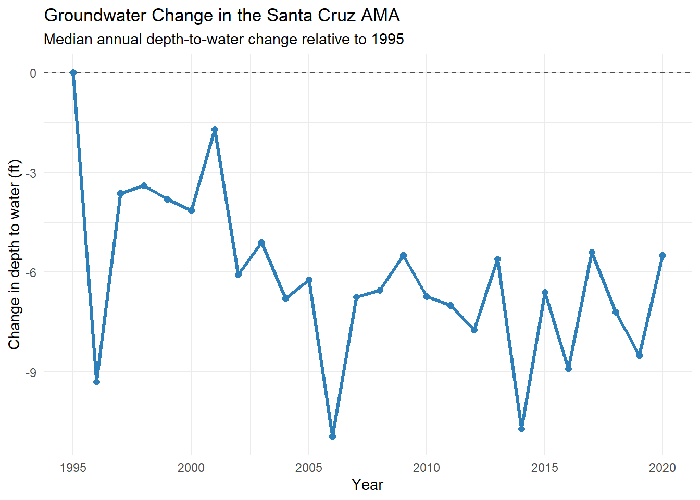

Code
# install.packages(c("edr4r", "dplyr", "ggplot2", "sf", "leaflet", "lubridate"))
invisible(lapply(c("edr4r", "dplyr", "ggplot2", "sf", "leaflet", "lubridate"), library, character.only = TRUE))Tutorial Overview
In this tutorial, you’ll explore groundwater conditions in the Santa Cruz Active Management Area (AMA) using data available through the Arizona Water Observatory (AWO). We begin by retrieving the Santa Cruz AMA boundary, then identify groundwater wells within the AMA and retrieve depth-to-water observations for each well. Finally, we compare annual median groundwater levels with those in 1995, the first full year after the AMA was established, to examine how groundwater levels have changed over time.
Study Area and Context
Groundwater is a critical water source across much of Arizona. Unlike surface water, which is visible in rivers and reservoirs, groundwater is stored beneath the land surface in aquifers. In some regions, decades of groundwater withdrawals have led to declining groundwater levels. To address these declines, Arizona established Active Management Areas (AMAs) under the 1980 Groundwater Management Act, where groundwater use is regulated to promote long-term sustainability. Monitoring groundwater levels is essential for understanding how aquifers respond over time, evaluating the effectiveness of groundwater management, and identifying areas where groundwater levels are stable or continue to decline.
About the Arizona Water Observatory
The Arizona Water Observatory (AWO) developed by Arizona State University’s Arizona Water Innovation Initiative and the Center for Geospatial Solutions, provides a single access point to environmental water data from authoritative sources across Arizona. Through a common interface based on the Open Geospatial Consortium Application Programming Interface - Environmental Data Retrieval (OGC API EDR) standard, users can retrieve datasets consistently by location, time period, and parameter, regardless of the original data provider. By bringing together datasets that are often managed by different agencies and distributed through separate systems, AWO reduces the technical effort required to discover, access, and combine environmental water data for researchers, water managers, and other users.
Beyond the analysis in this tutorial, the Arizona Water Observatory provides access to many additional datasets, tools, and capabilities for exploring Arizona’s water resources. Visit AWO to start exploring.

Watch the video below for a step-by-step walkthrough of the exercise.
This exercise uses R as the programming language and several packages that help retrieve environmental data and perform geospatial analysis:
edr4r retrieves environmental data from an OGC API EDR.
dplyr processes and prepares the data.
sf performs spatial operations.
ggplot2 creates plots for visualization and exploration.
leaflet produces interactive maps.
If you do not already have these packages installed, you can install them using install.packages(). Once the packages are installed, load them using library()
# install.packages(c("edr4r", "dplyr", "ggplot2", "sf", "leaflet", "lubridate"))
invisible(lapply(c("edr4r", "dplyr", "ggplot2", "sf", "leaflet", "lubridate"), library, character.only = TRUE))First, we retrieve the geometry of the Active Management Areas (AMAs). To do this, we create a client using the base URL of the Arizona Water Observatory OGC API – EDR service. We then retrieve the Arizona Department of Water Resources Active Management Areas collection and filter it to the Santa Cruz AMA. We will use the Santa Cruz AMA boundaries from this step to retrieve groundwater information. The map below shows all AMAs, with the Santa Cruz AMA highlighted in blue.
api_root <- "https://asu-awo-pygeoapi-864861257574.us-south1.run.app"
client <- edr_client(api_root)
ama_url <- paste0(
api_root,
"/collections/Active_Management_Areas_2025/items?f=json&limit=1000"
)
amas <- st_read(ama_url, quiet = TRUE) |>
st_transform(4326)
santa_cruz_ama <- amas |>
filter(NAME_ABBR == "SCA")
ggplot() +
geom_sf(data = amas, fill = "gray90", color = "gray50", linewidth = 0.4) +
geom_sf(data = santa_cruz_ama, fill = "#2C7FB8", color = "#08306B", linewidth = 0.8) +
labs(
title = "Arizona Active Management Areas",
subtitle = "Santa Cruz AMA highlighted",
) +
theme_minimal()
Now, we can retrieve the wells with depth-to-water information within the Santa Cruz AMA. To do this, we use edr_locations() function from edr4r. edr_locations() requires the client URL, the Arizona Department of Water Resources Groundwater Site Inventory collection, the Santa Cruz AMA bounding box to define the area of interest, and the depth-to-water parameter. We specify the format format = "geojson" because GeoJSON is the standard format for representing geographic features such as groundwater well locations.
parameter_name <- "WLWA_DEPTH_TO_WATER"
santa_cruz_wells <- edr_locations(
client,
collection_id = "ArizonaWaterWells",
bbox = as.numeric(st_bbox(santa_cruz_ama)),
parameter_name = parameter_name,
limit = 10000,
format = "geojson"
) |>
st_filter(santa_cruz_ama) |>
mutate(
well_id = as.character(id),
ama = "SCA"
)
santa_cruz_wells |>
st_drop_geometry() |>
select(well_id, ama) |>
head()# A tibble: 6 × 2
well_id ama
<chr> <chr>
1 311958110562701 SCA
2 311958110562801 SCA
3 312006110505101 SCA
4 312012110480901 SCA
5 312013110561301 SCA
6 312017110573001 SCA Then, we can create an interactive map with leaflet to visualize the Santa Cruz AMA and the groundwater wells. You can zoom in, pan around, and click each well to see its ID.
leaflet(width = "100%", height = 600) |>
addProviderTiles(providers$CartoDB.Positron) |>
addPolygons(
data = santa_cruz_ama,
fillColor = "#9ecae1",
fillOpacity = 0.30,
color = "#084594",
weight = 2,
popup = "Santa Cruz AMA",
group = "Santa Cruz AMA"
) |>
addCircleMarkers(
data = santa_cruz_wells,
radius = 5,
fillColor = "#d7191c",
fillOpacity = 0.85,
color = "white",
weight = 0.8,
popup = ~paste0("Well ID: ", well_id),
group = "Groundwater wells"
) |>
addLayersControl(
overlayGroups = c("Santa Cruz AMA", "Groundwater wells"),
options = layersControlOptions(collapsed = FALSE)
) |>
fitBounds(
lng1 = as.numeric(st_bbox(santa_cruz_ama)["xmin"]),
lat1 = as.numeric(st_bbox(santa_cruz_ama)["ymin"]),
lng2 = as.numeric(st_bbox(santa_cruz_ama)["xmax"]),
lat2 = as.numeric(st_bbox(santa_cruz_ama)["ymax"])
)Next, we download the depth-to-water time series for each well in the Santa Cruz AMA. We again use edr_location() with format = "covjson" to retrieve the observations for each well. covjson is well suited for environmental observations that vary across one or more dimensions, such as depth-to-water values through time at a groundwater well. This example shows the versatility of the OGC EDR API, which can return different formats depending on whether we need locations for mapping or time series for analysis.
start_date <- "1995-01-01"
end_date <- "2020-12-31"
datetime_range <- paste(start_date, end_date, sep = "/")
depth_tables <- list()
for (i in seq_len(nrow(santa_cruz_wells))) {
response <- edr_location(
client,
collection_id = "ArizonaWaterWells",
location_id = santa_cruz_wells$well_id[i],
datetime = datetime_range,
parameter_name = parameter_name,
format = "covjson"
)
depth_tables[[i]] <- covjson_to_tibble(response) |>
transmute(
well_id = santa_cruz_wells$well_id[i],
date = as.Date(datetime),
depth_to_water = as.numeric(value)
)
}
groundwater_raw <- bind_rows(depth_tables) |>
filter(!is.na(date), !is.na(depth_to_water))
head(groundwater_raw)# A tibble: 6 × 3
well_id date depth_to_water
<chr> <date> <dbl>
1 311958110562701 2020-11-19 15.4
2 311958110562701 2020-08-26 14.1
3 311958110562701 2013-03-26 12.1
4 311958110562701 2012-10-10 11.4
5 311958110562701 2012-05-22 12.5
6 311958110562701 2012-03-07 12.8For each well, we calculate the median depth to water for each year and compare it with the median depth to water in 1995. The change in depth to water is calculated as the 1995 reference depth minus the annual median depth to water. We then calculate the median annual change across all wells. The dashed line represents no change relative to the 1995 baseline. Values below zero indicate that the depth to water has increased, meaning that the groundwater level has declined and the water table is deeper than it was in 1995.
reference_year <- 1995
groundwater_yearly <- groundwater_raw |>
mutate(year = year(date)) |>
group_by(well_id, year) |>
summarise(
median_depth_to_water = median(depth_to_water, na.rm = TRUE),
.groups = "drop"
)
reference_table <- groundwater_yearly |>
filter(year == reference_year) |>
select(
well_id,
reference_depth = median_depth_to_water
)
groundwater_change <- groundwater_yearly |>
inner_join(reference_table, by = "well_id") |>
mutate(change_from_reference = reference_depth - median_depth_to_water)
ama_change <- groundwater_change |>
group_by(year) |>
summarise(
median_change_ft = median(change_from_reference, na.rm = TRUE),
n_wells = n_distinct(well_id),
.groups = "drop"
)
ggplot(ama_change, aes(year, median_change_ft)) +
geom_hline(yintercept = 0, linetype = "dashed", color = "gray30") +
geom_line(color = "#2c7fb8", linewidth = 1.1) +
geom_point(color = "#2c7fb8", size = 2) +
theme_minimal() +
labs(
title = "Groundwater Change in the Santa Cruz AMA",
subtitle = paste0("Median annual depth-to-water change relative to ", reference_year),
x = "Year",
y = "Change in depth to water (ft)"
)
In this tutorial, you used the Arizona Water Observatory to retrieve groundwater well observations within the Santa Cruz AMA and compare groundwater levels to a historical baseline to evaluate long-term change. The same workflow can be adapted to other regions and datasets available through AWO. Explore the platform to discover additional environmental datasets, tools, and capabilities for analyzing Arizona’s water resources.